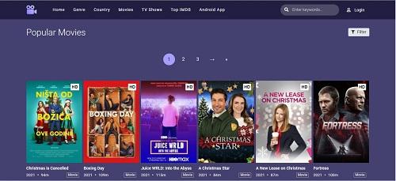
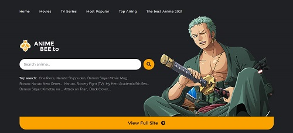
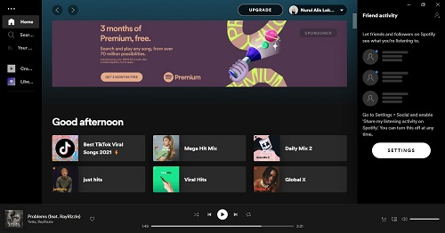
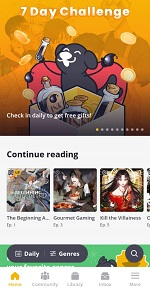
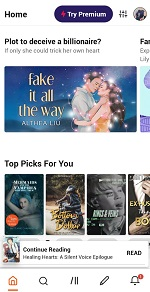

HOBBIES
I have a lot of hobbies. Among them are watching movies, and anime on free websites on the internet, listening to songs, singing, reading books and reading manga online.
WATCH MOVIES AND ANIME
I like watching mysterious movies, thrillers, fiction, action, and comedy. Most of the movies I watch are on the website because I don't have a Netflix account. I not keen on stories that have series because it takes so long to spend, and the storyline is a bit nonsense. I don’t like the romance genre because all stories have the same and ridiculous storylines. It is always related to rich men and poor women who do not get the blessing of family members and vice versa. It doesn't excite me. I love stories that can make me more curious and interest me more deeply. Funny genre stories usually come from Hong Kong and Taiwanese. I'm very interested in actors like Stephen Chow and Jackie Chan. Usually, thriller movies and mysteries come from Europe. My European actor is passionate about Tom Cruise because I love him acting in the mission impossible movies.

I watch anime in the genres of fantasy, shounen, seinen, a slice of life, sport, psychological, and mores. I like to watch sports anime like Haikyuu, Kuroko No Basket, Eyeshield 21, and Slam Dunk. I'm still waiting for Haikyuu to release their 5th season. The slice of life genre is also interesting because it is about family, friend relationships, and how life works. I like Naruto anime because Naruto always gives excellent advice in every scene. I watch all the Naruto series and movies because they are so interesting and fun to watch. But I can’t spend my time watching the Boruto series because it’s not interesting, but I still want to watch it. The reason is I want to see Naruto in that series. I would spend time watching anime on the weekends if I didn’t have any homework or assignments to do. But, now I quite rarely have the time to watch anime because of a lot of work that needs to be completed. I watch anime on the Ummagurau website, Facebook, and YouTube because it's free.
LISTENING TO SONGS AND SINGING
I listen to songs almost every day because I like to do my assignments while listening to songs. I can avoid drowsiness when I hear it and at the same time, I will be more eager to do the work. The song that I usually listen to at night is a sad song because it encourages me to focus more and avoid getting bored. Meanwhile, the songs that are fast-beat I will listen to it in the afternoon and evening. I will be more excited and have fun getting the job done faster. I’ll stop for a moment to sing along if the song is very interesting. When I'm typing, I won't sing and just listen.
Most of the songs I hear are English-language songs. I listen to the songs through YouTube, Spotify, and songs from my phone. I'm interested in singers like Adele, Selena Gomez, Ariana Grande, Maroon Five, Justin Bieber, Bruno Mar, and Sam Smith. The songs that I usually listen to come from Tiktok. I also like to listen to kpop songs from EXO groups. I'm just interested in some Korean singers because I'm not interested in kpop. I sing to get rid of boredom and to let go of stress as songs play with my emotions. The songs from 5 Second of Summer that I've been listening to are Teeth because they're vibrant and interesting songs.
READ BOOKS AND MANGA ONLINE

I love reading books that have nothing to do with the studies I take. Every day I would be reading any stories even though I was busy. I read a lot of stories from the Wattpad app because it has a lot of stories, and most of the stories in the app are free. I can see many writers who have the talent to post their stories and some who do not have a talent in writing styles. The app is open to all users to create their own stories and publish them. I read stories about a werewolf, fantasy, reincarnation, reborn, revenge, mystery, and thriller. I don't keen on stories that have a romantic genre. The genres of revenge, reincarnation, and reborn are the ones that I'm most interested in because of the many twists in the story. But, many of the stories in it have not been updated in a long time and I forgot their storyline. Every time there is an update, I have to read it again from the beginning to remember it again. This is because the story is quite interesting.

I use a lot of apps and websites to read the manga. The applications I use are Tapas and the other applications that were downloaded from certain websites. The website I used to read manga is free but cannot be disclosed and shared as it is likely to be banned. Only a few people know about it. The website has many different genres, it is opposite with paid applications such as Tapas which have few. Every day I would log in to the website account to see if there was any update. I'm not going to read the manga that's been animated because I'm going to watch the anime. But, for manga like Promised Neverland, I do both things. I read their manga and watch the anime because the storyline is so amazing. Manga is the best choice to read if anyone is interested in reading.